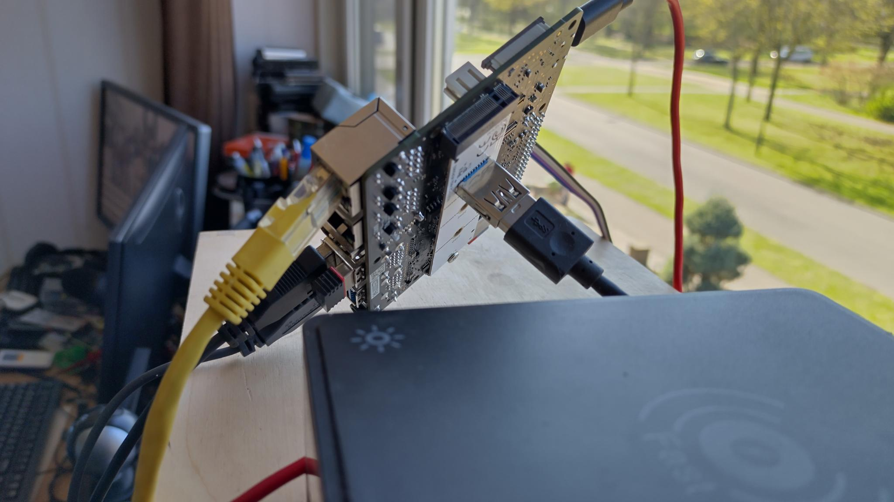
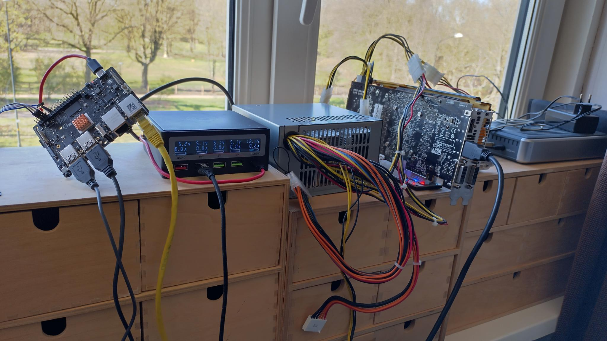

2025-03-30 - Bas Magré
Ubuntu 25.04 (beta) StarFive VisionFive 2 AMDGPU
Ubuntu 25.04 is using the 6.14 kernel. This has the PCI-e controller of JH7110 SoC + AMDGPU drivers that are working with RISC-V. So if you have a M.2 to pci-e adapter you can now run Ubuntu with AMDGPU on RISC-V (without building your own kernel with patches etc.)
The only problem is now the U-boot that initialize the PCI-e controller to scan for M.2 drivers. Some of my AMDPGU do not like that (fan 100% and not detected anymore in the kernel).
So we need a U-boot (with the patches from Ubuntu) without the initialization of the PCI-e controller. I have build that and release the flash-files (u-boot + opensbi) on github.
So we can now just flash Ubuntu 25.04 to an eMMC and use the custom flash-files (u-boot + opensbi).
A lot of my AMDGPU’s worked on this setup:
- ATI Radeon HD 5450 (Cedar PRO)
- ATI Radeon HD 5850 (Cypress PRO)
- AMD Radeon R9 290 (Hawaii PRO)
- AMD Radeon R9 290X (Hawaii XT)
not working:
- AMD Radeon RX 6600 (Navi 23 XL)
It is booting, it gives screenoutput (black) and then the system hangs completely
Hardware Setup
I have configured my VisionFive 2 to boot from SD-card, see the last pages of this document.
The reason is I very often change u-boot / kernel, so i want them on the sd-card. (You can flash the created/downloaded firmware files and override the partitions 13 and 2 on the eMMC or flash it to the board. But this example will use a SD-card to boot).
So my setup is a SD-card to boot (custom U-boot) and an eMMC for the Ubuntu operation system (default Ubuntu kernel and GNU software)
I have a M.2 to PCI-e board so I can add an AMDGPU on my VisionFive 2.
It can look something like this:
  or  or
or  see youtube video
see youtube video
Flash Ubuntu 25.04 (beta) to eMMC
download from the site the image 25.04.
I used “balenaEtcher” to flash this to my eMMC (with an USB to eMMC adapter).
Create/download u-boot without PCI-e initialization and flash to SD
We need a custom u-boot that will not try to initialize the PCI-e controller (scan for m.2 device). Some of the AMDGPU’s don’t like that (fan 100% and not detected anymore in the kernel)
So on build we need to set CONFIG_PCI_INIT_R and
CONFIG_CMD_PCI to n (no).
I all ready create this builds and they can be found here:
Insert you SD-card (with GPT-partition-tables) in you computer (this example expect /dev/sdb to be your SD-card)
wget https://github.com/Opvolger/ansible-riscv-sd-card-creater/releases/download/0.2.0/release.tgz
tar -xvzf release.tgz
# check where your SD-card is with lsblk, in this example it is /dev/sdb
# delete MBR of SD-Card
sudo dd if=/dev/zero of=/dev/sdb bs=512 count=1 conv=notrunc
# we will create the needed partitions to boot from SD-card (for more information see https://docs.u-boot.org/en/latest/board/starfive/visionfive2.html)
sudo sgdisk --clear \
--set-alignment=2 \
--new=1:4096:8191 --change-name=1:spl --typecode=1:2E54B353-1271-4842-806F-E436D6AF6985 \
--new=2:8192:16383 --change-name=2:uboot --typecode=2:BC13C2FF-59E6-4262-A352-B275FD6F7172 \
/dev/sdb
# now "flash" the firmware on the sd-card
sudo dd if=release/ubuntu-25-04/u-boot-spl.bin.normal.out of=/dev/sdb1
sudo dd if=release/ubuntu-25-04/u-boot.itb of=/dev/sdb2If booting ubuntu is not working (you can see it with
serial-connection for example
screen -L /dev/ttyUSB0 115200), go back to default settings
in u-boot with:
how to set the default is explained also in the ubuntu site. The only different is that I am using the sd-card and not the onboard flash.
StarFive #
env default -f -a
env saveReboot you board (power off/on)
First boot Ubuntu
login with ubuntu/ubuntu (you have to change the password!)
# set timezone
sudo timedatectl set-timezone Europe/Amsterdam
# check if the date is correct (now)!
date
# if not disable ntp sync
timedatectl set-ntp false
# update datetime to current date/time
timedatectl set-time '2025-03-30 19:26:50'
# enable ntp sync again
timedatectl set-ntp true
# update all packages
sudo apt update
sudo apt upgrade
# add repo for firefox
sudo add-apt-repository ppa:mozillateam/ppa
# install what default stuff + install kde + firefox + some c dev tools (so you can compile some stuff)
sudo apt install nano software-properties-common cmake cabextract sddm sddm-theme-breeze kde-standard build-essential libxml2 libcurl4-gnutls-dev fastfetch ubuntu-dev-tools libopenal-dev libpng-dev libjpeg-dev libfreetype6-dev libfontconfig1-dev libcurl4-gnutls-dev libsdl2-dev zlib1g-dev libbz2-dev libedit-dev python-is-python3 m4 clang firefox kde-spectacle
# now reboot
sudo rebootFix network manager in KDE (so you can control network in KDE)
sudo nano /etc/netplan/01-network-manager-all.yaml# Let NetworkManager manage all devices on this system
network:
version: 2
renderer: NetworkManagersystemctl disable systemd-networkd.service
systemctl enable NetworkManager.serviceDone
You will now see a KDE desktop login! Good luck and have fun!